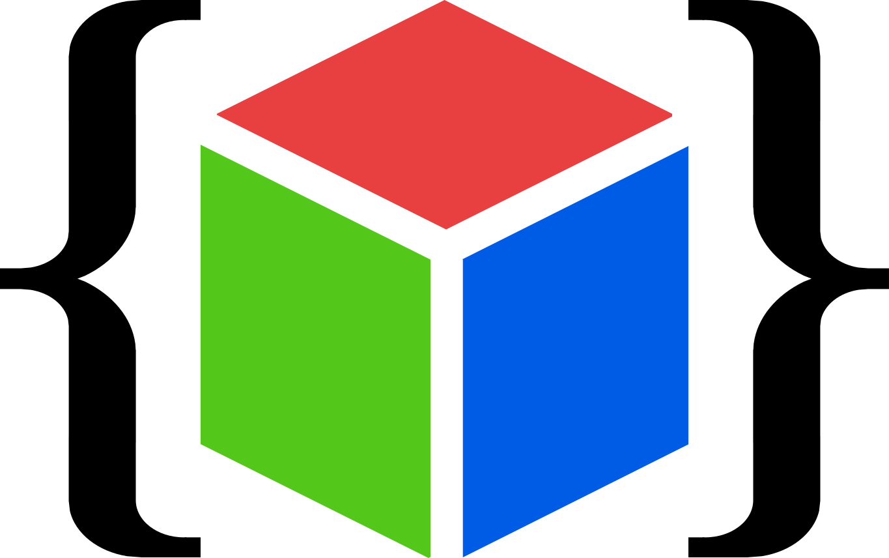

Arrayfy: 画像を配列に変換君
概要
画像データを LCD や OLED 用の C/C++ 配列コードに変換するツールです。Adafruit/Lovyan GFX 等で使用可能な RGB565 形式の画像のほか、SSD1306、SSD1309、Nokia PCD8544 といった縦 8 ピクセルを 1 バイトとする白黒ディスプレイに直接転送可能な形式のデータも作成できます。
処理はブラウザ上で行われます。どこかに送信されることはありません。
実機確認実績
| 形式 | 確認状況 | 確認環境 |
|---|---|---|
| RGB565 | ✔ | Lovyan GFX + GC9A01 |
| RGB555 | ||
| RGB332 | ✔ | Lovyan GFX + GC9A01 |
| RGB111 | ||
| Gray4 | ||
| Gray2 | ||
| B/W | ✔ | 自作コード + SSD1306 |
更新履歴
| バージョン | 日付 | 内容 |
|---|---|---|
| 1.0 | 2025/08/24 | 初版 (白黒のみ) |
| 1.1 | 2025/08/25 | カラー、グレスケ対応 |
関連情報
- SNS 投稿: X (Twitter), Misskey.io, Bluesky, mixi2